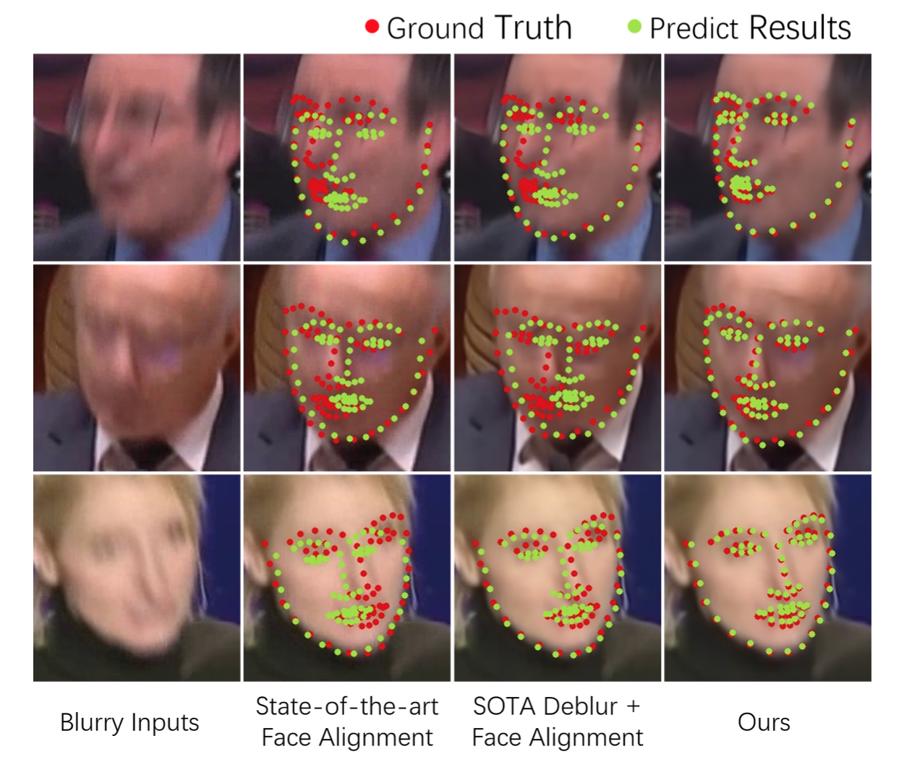
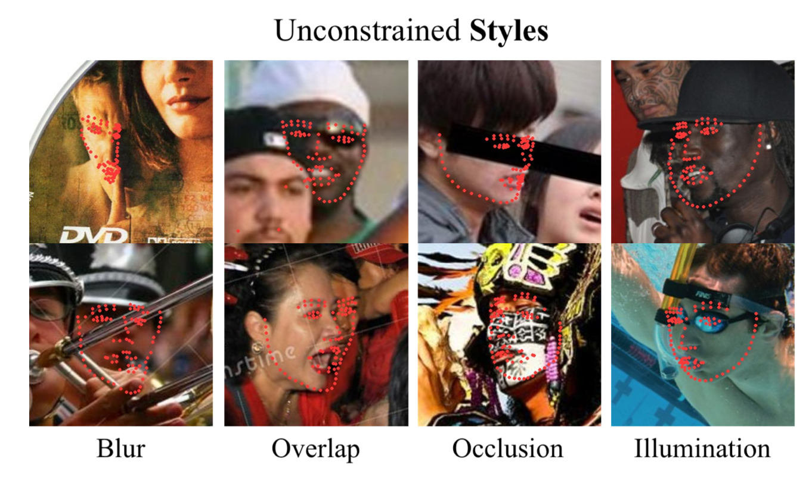

|
I am a first year Ph.D. student in the department of CSE, Hong Kong University of Science and Technology. I am supervised by Prof. Jia Li. Before that, I received my Master’s degree in Electronic and Information Engineering from Tsinghua University in 2021, and Bachelor’s degree from Huazhong University of Science and Technology in 2018. My research interests include graph generation, data mining and signal reconstruction. CONTACT: gzq18@tsinghua.org.cn |
|  |
FAB: A Robust Facial Landmark Detection Framework for Motion-Blurred VideosKeqiang Sun, Wayne Wu, Tinghao Liu, Shuo Yang, Quan Wang, Qiang Zhou, Zuochang Ye, Chen Qian. IEEE International Conference on Computer Vision (ICCV), 2019. [pdf][code] [project] We propose a robust framework face alignment in motion-blurred videos. |
|  |
Aggregation via Separation: Boosting Facial Landmark Detector with Self-Supervised Style TransitionShengju Qian, Keqiang Sun, Wayne Wu, Chen Qian, Jiaya Jia. IEEE International Conference on Computer Vision (ICCV), 2019. [pdf] [code] We propose a semi-supervised learning algorithm to boost facial landmark detectors. |